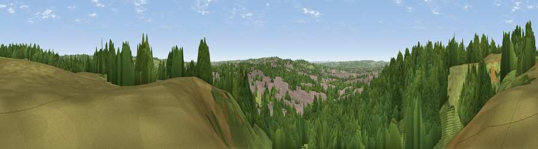

Viewpoint near Hulme
#30543 in England · top 51% of its area beats it · near HulmeWhere it is
The exact computed spot (SJ 93125 44225). Click the marker for map links.
The view, rendered

A 360° render of this exact spot computed from the terrain model, tree cover and land cover — summer colours, afternoon light, calibrated against photographs of famous viewpoints. Real trees, hedges and buildings will differ in detail.
The panorama
Grey silhouette: terrain skyline in each direction (720 bearings, Earth curvature and refraction included). Dashed green: skyline with trees (+15 m) and buildings (+8 m) as obstacles. Blue strip: how far the ground is visible on each bearing.
Where the view opens
Wedge length = distance to the farthest visible ground on that bearing (vegetation-aware). Rings at 10, 25 and 50 km.
What fills the view
58% woodland · 22% grassland · 19% built-up ·
Angular shares of the visible panorama (visual magnitude), not map area. Landscape diversity 0.45 (0–1 Shannon).
Key numbers
More beautiful places nearby
The staircase of upgrades: each row has a higher view potential than everything closer. Driving times are estimates from straight-line distance, calibrated against real road routing — check an actual route before setting out.
| Place | Direction | Drive | Score |
|---|---|---|---|
| Viewpoint near Hulme | W · 0 km | ~2 min | 43.4 |
| Viewpoint near Hulme | NNW · 1 km | ~4 min | 48.0 |
| Viewpoint near Werrington | N · 4 km | ~10 min | 49.5 |
| Viewpoint near Bagnall | N · 6 km | ~12 min | 57.0 |
| Viewpoint near Beech | WSW · 10 km | ~19 min | 62.9 |
| Viewpoint near Brown Edge | NNW · 10 km | ~20 min | 65.2 |
| Ashenough Hill | NW · 13 km | ~24 min | 66.0 |
| Bignall Hill | WNW · 13 km | ~24 min | 75.2 |
52.99531, -2.10388 · source: screening · position refined by local search. Computed location — check access rights before visiting.